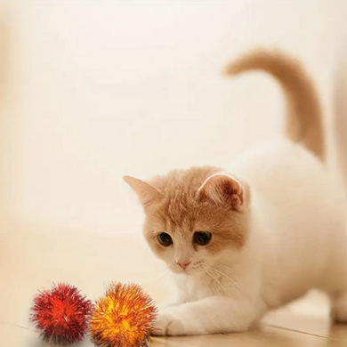

Publicado el 28 de junio de 2023
Gatito jugando con una bola de estambre.
Gatito durmiendo plácidamente en una cama.
Gatito explorando su entorno curiosamente.
Gatito disfrutando de un baño de sol en la ventana.
Gatito jugando con una pelota de papel.
Gatito posando con una expresión graciosa.
Gatito abrazando a su dueño con ternura.
Los gatitos han tomado por asalto las redes sociales esta semana, con una serie de fotos adorables que han derretido corazones en todo el mundo. Desde gatitos jugando con juguetes hasta gatitos durmiendo en posiciones extrañas, estas imágenes han cautivado a millones de personas y se han vuelto virales en cuestión de horas.
Los usuarios de las redes sociales han compartido estas fotos con entusiasmo, comentando lo adorables que son los gatitos y compartiendo historias sobre sus propias mascotas. Algunos incluso han organizado campañas para adoptar gatitos sin hogar después de ver estas fotos conmovedoras.
Los expertos en redes sociales predicen que esta tendencia continuará creciendo en los próximos días, ya que la gente sigue compartiendo y comentando estas fotos con sus amigos y familiares. Parece que los gatitos están aquí para quedarse, ¡y nosotros no podríamos estar más emocionados!